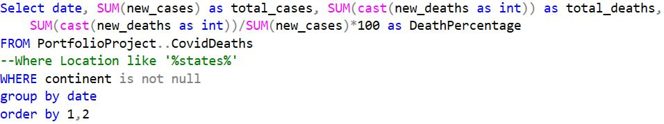

🚀 Unveiling COVID-19 Realities with SQL: A Data Exploration Journey
Unlocking COVID-19 insights with SQL: Elevating data skills.
Embarking on a SQL-driven odyssey, I navigate through COVID-19 statistics sourced from two pivotal datasets—tracking both the gravity of the pandemic through death records and the beacon of hope in vaccination progress. The journey commences with a strategic SQL query, spotlighting continents with robust data integrity. Explore the full SQL code on my GitHub. If you need the database you can Download it here. For a detailed step-by-step narrative, follow along in this post as we unravel the intricacies of a world grappling with unprecedented challenges.
In my first SQL move, I queried the COVID-19 deaths database, extracting data where the continent is not null, and sculpting a narrative ordered by location and date.
Continuing the exploration, I refined the dataset by selecting Location, Date, Total Cases, New Cases, Total Deaths, and Population from the COVID-19 deaths database. This organized data, sorted by location and date using SQL, sets the stage for a more focused analysis.
Next up, I delve into the percentage comparison of Total Cases vs Total Deaths, spotlighting areas with "states" in their name and the expansive region of Asia. With SQL precision, these percentages unfold, revealing nuanced pandemic impacts. Feel free to customize the location—swap "states" or "Asia"—to explore different geographical nuances.
Expanding our analytical lens, the next phase involves a meticulous examination of the Total Cases vs Population percentage. This insightful metric allows us to gauge the percentage of the population impacted. Customize the location to explore different regions and witness the varying degrees of infection. With SQL precision, we unveil nuanced insights into the pandemic's reach across diverse locations.
In the following step, we direct our focus towards identifying countries with the highest infection rates relative to their population. This pivotal analysis, carried out with precision using SQL, provides a detailed perspective on the varying degrees of impact across nations. Uncover the insights as we delve into the data, spotlighting regions with the most pronounced infection rates in percentage terms.
In this distinct step, our focus shifts to unveiling countries with the highest death count per population, grouped by a specific location of interest. Leveraging SQL precision, we navigate through the data to pinpoint regions where the impact, measured in deaths relative to population, is most pronounced. This detailed analysis offers a nuanced understanding of the pandemic's toll across different locations.
In the upcoming step, our lens broadens to unveil continents with the highest death count per population. Employing SQL precision, we dissect the data to reveal the regions where the impact, measured in deaths relative to population, is most profound. This analytical journey offers a macroscopic view of the pandemic's toll, providing valuable insights into the continent-level dynamics.
In this pivotal step, we aim to grasp the global impact by calculating the death percentage from total cases. Using SQL precision, we traverse the worldwide dataset to unveil the ratio of deaths to total cases, offering a comprehensive understanding of the pandemic's severity on a global scale.
In this next stride, the focus narrows to a daily lens as we examine the death percentage from total cases for each country, grouped by date. Through meticulous SQL querying, we unravel the day-by-day narrative, offering a dynamic portrayal of the global impact. This granular analysis provides a nuanced understanding of how the death percentage fluctuates on a daily basis across the world.
Advancing in the exploration, I seamlessly integrate data from the "Covid Deaths Database" and "Covid Vaccination Database" to examine the global vaccination landscape. With SQL finesse, I quantify the vaccinated population, unraveling the progression ordered by location and date. This harmonized analysis paints a comprehensive picture, offering insights into the simultaneous dynamics of COVID-19 impacts and vaccination efforts worldwide.
In this sophisticated step, I leverage Common Table Expressions (CTEs) to elevate the clarity and efficiency of our SQL queries. Building upon the foundation of the previous step, I intricately merge data from the "Covid Deaths Database" and "Covid Vaccination Database" to illuminate global vaccination trends. The focus here is not only on the daily total of vaccinated individuals but also on the percentage of the population getting vaccinated each day. This nuanced approach provides a comprehensive view, showcasing the intersection of COVID-19 impacts and vaccination progress.

In this iterative phase, I transition from Common Table Expressions (CTEs) to the practicality of temporary tables, leveraging the efficiency and stability they offer for subsequent visualizations. The data, previously refined in the last step, is now encapsulated in a temporary tabular format. This shift does not alter the insightful analysis focused on daily vaccination totals and percentages. However, with the robust foundation of a temp table, we pave the way for seamless visualization and exploration in the upcoming steps.
In the latest stride of this project, I've curated a dynamic view, "VisualizationData," tailored for seamless integration with Tableau and Power BI. This dataset encapsulates vital information—continent, location, date, population, new vaccinations, and a rolling tally of vaccinated individuals. With the groundwork laid for compelling visualizations, stay tuned as we navigate the global narrative of COVID-19 impacts and vaccination progress.
As we wrap up this immersive dive into COVID-19 data using SQL, I extend my heartfelt gratitude to you for joining me on this analytical voyage. Your curiosity and engagement have fueled the exploration of continent-wise death rates, daily vaccination trends, and the intricate intersections of COVID-19 impacts and vaccination progress.
In the upcoming posts, I'm excited to showcase the visual manifestations of these insights using Tableau and Microsoft Power BI. Your presence in this data-driven conversation is valued, and I look forward to continuing the exploration together. If you have questions or thoughts, feel free to connect via the "About Me" section.
Thank you for being part of this data journey—your enthusiasm adds depth to the narrative we're crafting. Stay tuned for the visual symphony that awaits us in the next chapters!🔗 Visualizations are already made in Tableau and Power BI. Click on each platform to explore the interactive visuals! #DataExploration #Gratitude #DataJourney